Aquí va la información sobre el departamento de Santander.
Santander es un departamento del nororiente de Colombia, con capital en Bucaramanga. Se destaca por el Cañón del Chicamocha, su historia en la independencia y su gastronomía típica como las hormigas culonas, el mute y la carne oreada.
Fiestas populares, música carranguera y el legado histórico de la independencia.
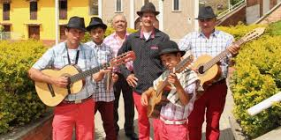tejidos en fique, cerámica y trabajos en cuero.
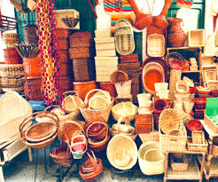La música de Santander se basa en ritmos tradicionales como el torbellino, la guabina, el bambuco y la carranga, que expresan la vida y alegría campesina.
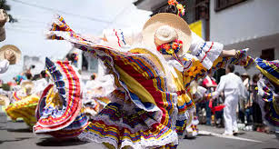La gastronomía de Santander es variada y tradicional. Destacan las hormigas culonas, el mute (sopa espesa con carnes y granos), la carne oreada, la arepa santandereana y dulces como las obleas y el arequipe.
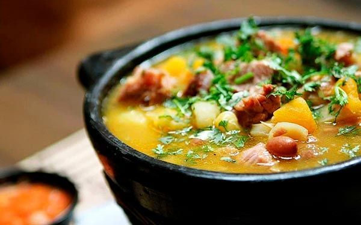| Año | Estimación de población |
|---|---|
| 2025 | 2 393 214 |
| 2024 | 2 376 736 |
Ubicado a unos 54 km de Bucaramanga, este parque temático y ecoturístico ofrece una experiencia integral con miradores, plazas culturales, senderos ecológicos, tirolesas, pista de hielo, buggy y fauna local.
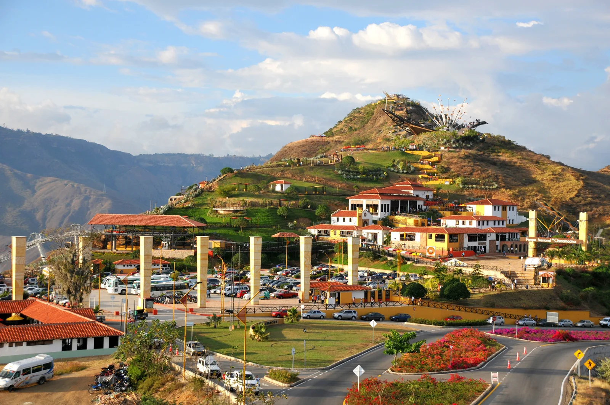Dos imponentes saltos de agua conforman este paisaje natural. Una caída desemboca en un pozo profundo, seguido por otro salto. Perfectas para quienes buscan desde tranquilidad hasta aventura: torrentismo, senderismo y observación de flora y fauna.
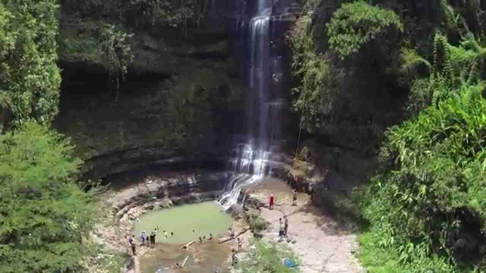Considerado el “pueblo más lindo de Colombia”, fue declarado Monumento Nacional. Sus calles empedradas, arquitectura colonial y miradores encantan a los visitantes, junto con rutas como el Camino Real que conecta con Guane.
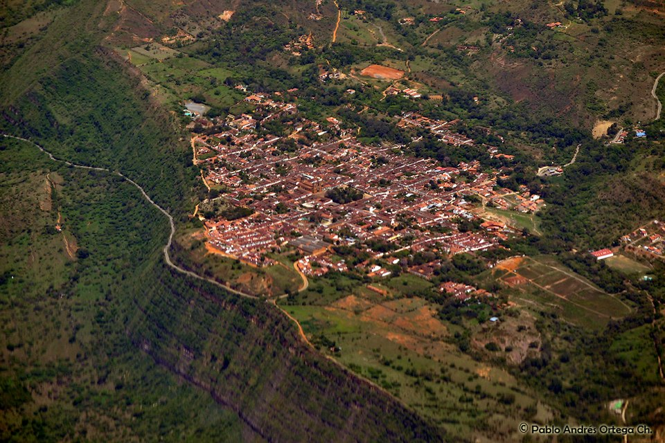Esta meseta de clima templado (~22 °C) ofrece paisajes naturales, huellas de cultura indígena (pinturas rupestres), miradores como el Salto del Duende y propuestas como el Centro Cultural Mi Colombia Querida, cafés, mariposario y experiencias culturales.
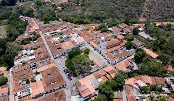insectos tostados que se consumen como pasabocas.
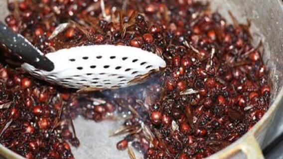sopa espesa con maíz, carne de res, cerdo, gallina y garbanzos.

carne de res adobada, secada al sol y luego asada.
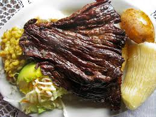mLa oblea es un dulce tradicional muy popular en América Latina, caracterizado por su sencillez y versatilidad. Consiste en dos delgadas láminas circulares de masa, hechas principalmente de harina y agua, que se rellenan con diversos ingredientes dulces o salados, según las preferencias locales.

Acafé, cacao, tabaco, caña panelera y cítricos.
explotación de petróleo, carbón, oro y generación hidroeléctrica.
calzado, confecciones, alimentos, bebidas y químicos.
pueblos coloniales, deportes de aventura y el Cañón del Chicamocha.
El Atlético Bucaramanga, fundado el 11 de mayo de 1949, es el equipo de fútbol más representativo de Santander. Sus colores son el amarillo y verde, y juega en el estadio Alfonso López de Bucaramanga. A lo largo de su historia ha sido subcampeón del fútbol colombiano en 1997 y participó en la Copa Libertadores de 1998. Aunque ha tenido descensos a la segunda división, cuenta con una de las hinchadas más fieles del país, conocida como la Fiebre Amarilla.
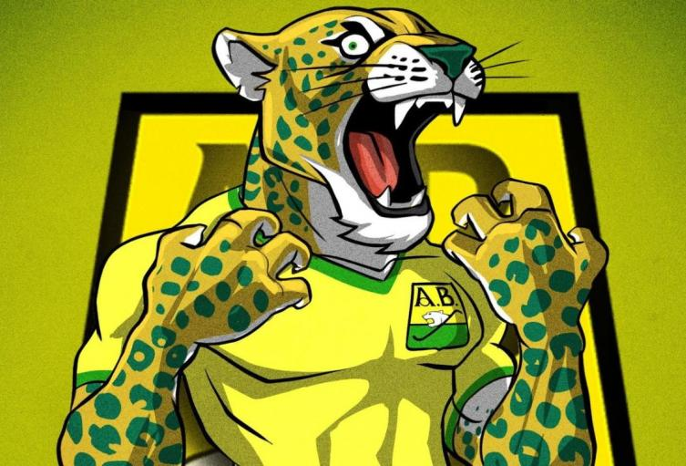